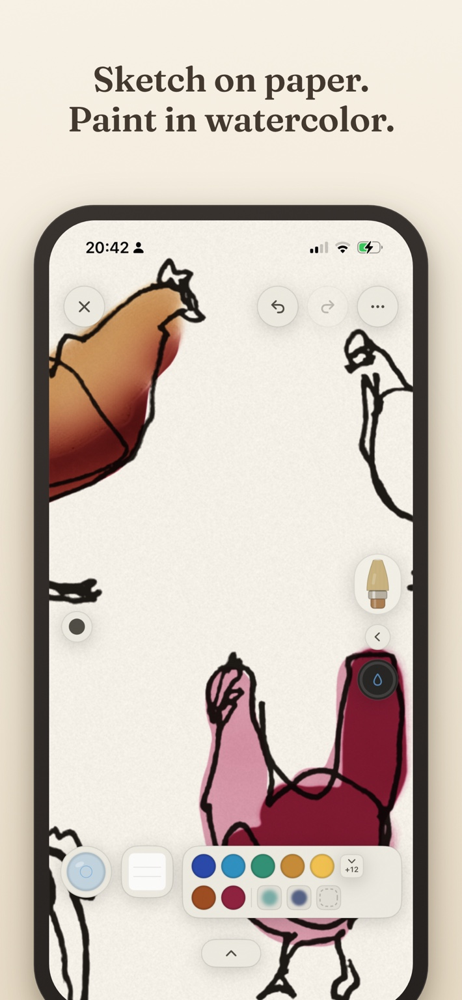
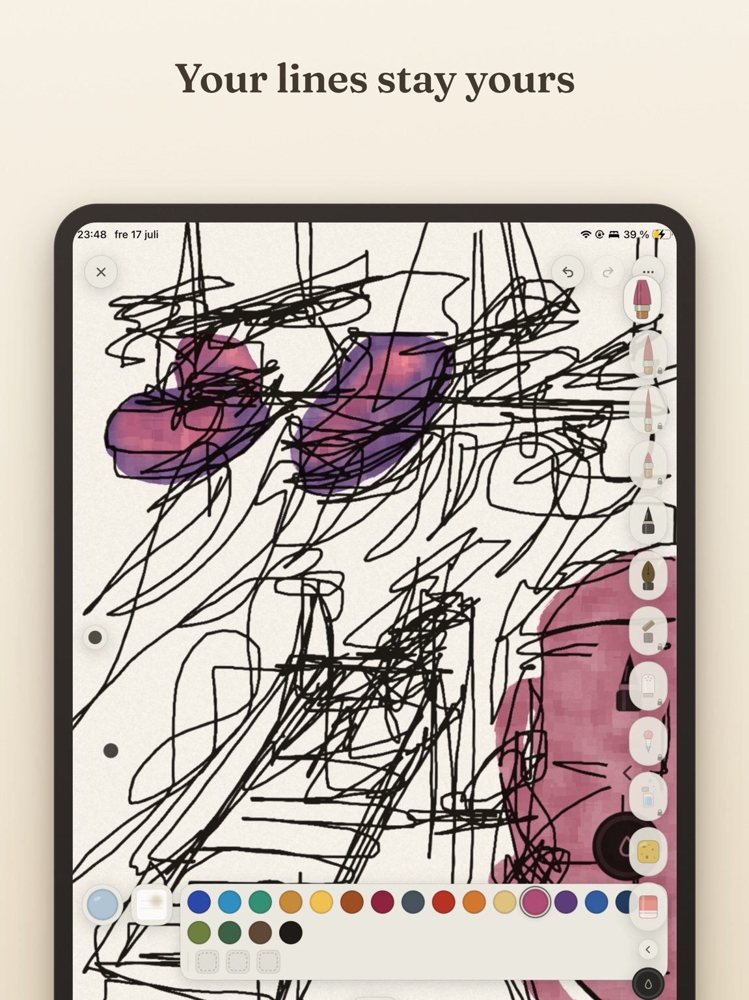
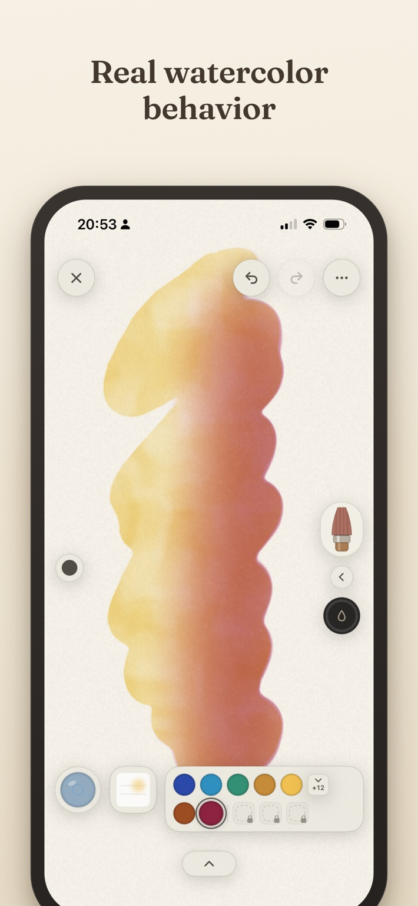
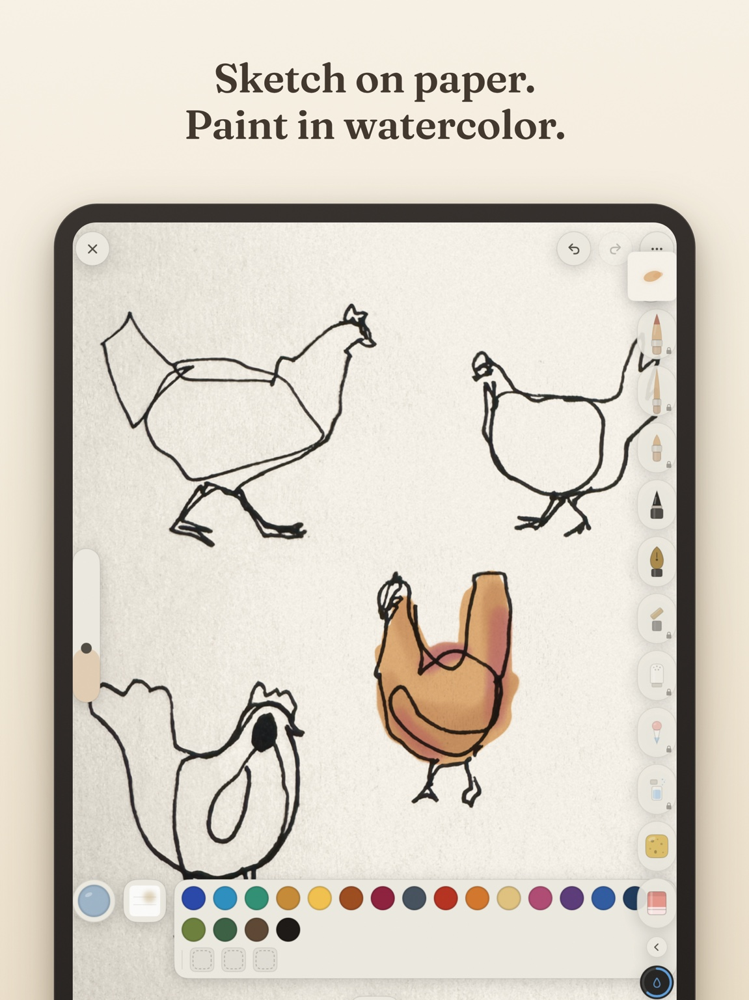
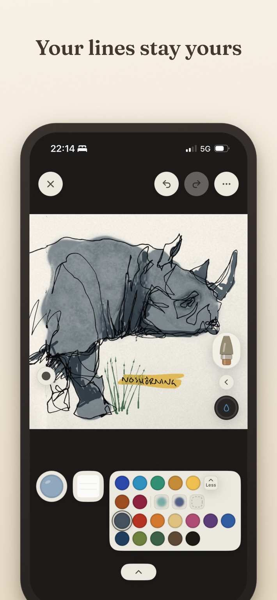
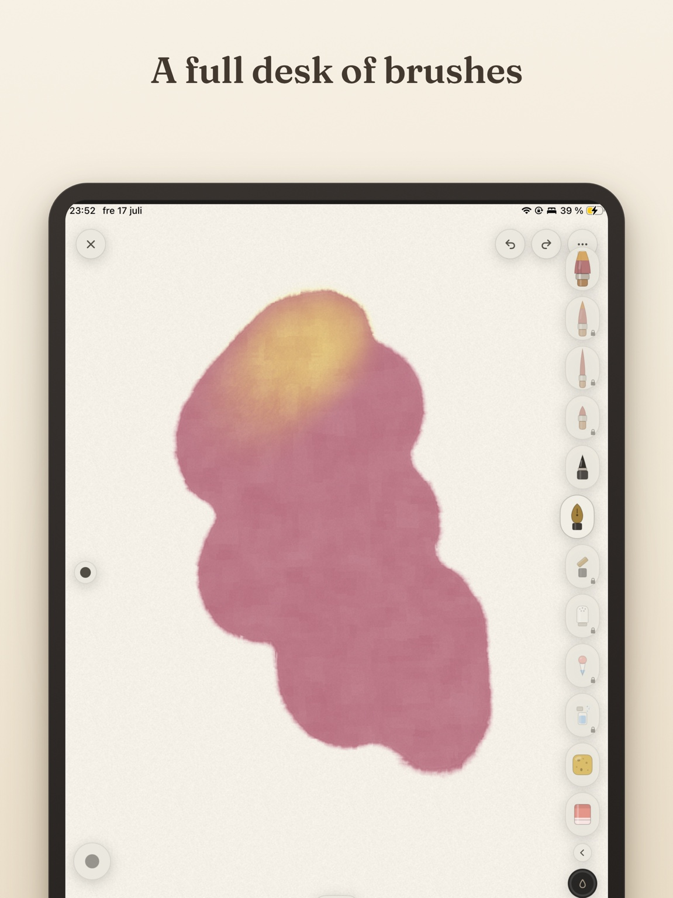

Sketch
Use your favorite pencil, fountain pen, fineliner, or whatever is already in your hand.
The watercolor app for artists who still sketch on paper.
Keep the character of your original linework, lift away the page, and paint naturally beneath your own lines.

A missing bridge
Line Lift lets you begin where ideas often feel best: on paper. Capture a sketch, separate your marks from the page, and continue painting without tracing everything again.

Your lines stay yours
Line Lift removes the paper while preserving the character of your drawing, so you can paint beneath it instead of rebuilding it.
A simple workflow
Use your favorite pencil, fountain pen, fineliner, or whatever is already in your hand.
Capture the page. Line Lift separates your marks, straightens the paper, and keeps the energy intact.
Paint beneath your own lines with wet-on-wet color, soft edges, pigment flow, and paper texture.

Real watercolor behavior
Paint blooms. Pigment flows. Colors mingle. Edges soften. Paper changes the result. Because watercolor is not only how it looks—it is how it moves.
Made for real sketchbooks


A growing artist's toolbox
Line Lift is built around the ways watercolor artists actually think: soften an edge, pull a fine line, drop pigment into a wash, or let the medium surprise you.
Salt blooms, lifting, granulation, water drops, dry brush, and edge softening.
Rigger brushes, spotters, flexible ink, and a direction-sensitive italic nib.
Mop brushes, reservoirs, atmospheric glazes, wet-edge control, and pigment drops.

Line Lift
Bring your paper sketches to life with natural watercolor.
Download on the App StoreComing to iPhone and iPad.